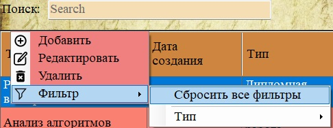
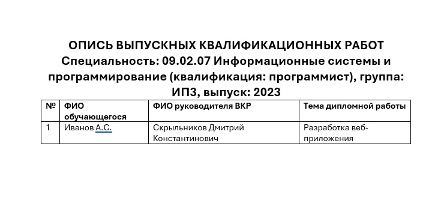

Программа «Архивный фонд» предоставляет широкий набор функций для полного цикла работы с архивными документами.
1. Ввод и хранение данных

Рис. 1. Форма добавления нового документа
Программа позволяет добавлять, редактировать и удалять записи о:
— студентах;
— учебных группах;
— личных делах (персональных файлах);
— документах (курсовые, дипломные, отчёты по практике);
— коробках хранения с указанием стеллажа и полки;
— типах документов (справочник).
2. Поиск и фильтрация

Рис. 2. Строка поиска и контекстное меню фильтрации
Реализованы следующие виды поиска:
— Полнотекстовый поиск по всем полям текущей таблицы (строка поиска в верхней части окна).
— Фильтрация по значению столбца через контекстное меню «Фильтр» (правый клик по таблице).
— Поиск документов по ФИО студента.
— Поиск документов по группе + году.
— Поиск по теме дипломной работы.
— Поиск документов с истёкшим сроком хранения (отдельно по каждому типу).
3. Учёт удалённых документов
Документы, подлежащие уничтожению, не удаляются безвозвратно, а перемещаются в специальные разделы:
— «Удалённые документы»;
— «Удалённые персональные файлы».
Эти данные также доступны для просмотра и поиска.

Рис. 3. Раздел «Удалённые персональные файлы»
4. Печать и формирование отчётов
Программа позволяет распечатывать:
— Личное дело студента (заполняется по шаблону).
— Опись дипломных работ по выбранной группе с указанием ФИО и темы диплома.
— Навигационный файл по архиву (список документов для физического поиска с указанием стеллажа, полки, группы и года).

Рис. 4. Пример сформированной описи дипломных работ
5. Администрирование
— Управление пользователями (роли: «Администратор» и «Сотрудник»).
— Резервное копирование базы данных.
— Восстановление базы из резервной копии.

Рис. 5. Управление пользователями (доступно только администратору)